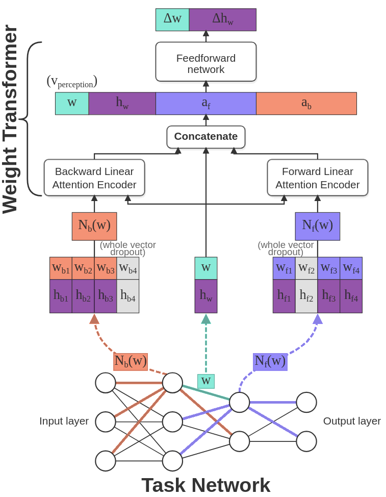

How it works

The setup
We have two neural networks here. The task network is the one being trained for a classification task. The local rule network is the one doing the training: it operates on individual weights and updates them, across the weights of the task net. The weight matrices in the demo belong to the task net. Each weight of the task net has a hidden state vector, functioning as memory that the local rule can write to, letting it pass along more information than just a scalar value.
Locality definition
For cellular automata on a grid, a “neighbor” is straightforwardly defined. Weights in a neural network don’t sit on a grid, so MetaNCA defines the neighborhood on the network’s computation graph. For a given weight, the forward neighborhood is the set of weights that contribute to that weight’s output, and those weights that take that output as input. The backward neighborhood is the set of weights that share that weight’s input, and those weights that produce that weight’s input. The Weight Transformer local rule allows us to aggregate the information from variable neighborhood sizes using linear attention.
How one update step works
Each frame in the demo runs through these steps:
- For each weight, gather its forward and backward neighborhoods.
- Apply linear attention to the forward and backward neighborhoods of the current considered weight, aggregating information into a single vector each for the forward and backward neighborhoods.
- Feed the current weight, its hidden state, and the aggregated forward and backward vectors to the Weight Transformer’s MLP head.
- The head returns \(\Delta w\) and \(\Delta h\); a random 80% of the weights apply their update.
Training the local rule
We grow a task net by applying the rule 10 times, measure the task loss, and backpropagate it through all 10 steps to get gradients for the rule parameters. This unrolling is backpropagation-through-time (BPTT). We do this across several task net architectures at once and average the gradients, then update the rule parameters with the Muon optimizer.
For this demo, we also use sample pooling, borrowed from the Growing NCA work. Without it, the rule would only ever be trained on the first 10 steps and could wreck the network afterward. So instead of always starting the task net from noise, we keep a pool of partially-grown networks for each architecture and sample some of those each meta-epoch. This allows the local rule to keep the network stable over many timesteps.
Why it generalizes
Since the rule is defined purely from local neighborhoods, we can apply it on a new architecture directly. The rule driving the demo was meta-trained on a few small MLPs, but you can change the architecture to ones unseen during meta-training. Even changing the architecture mid-run works, and the rule is able to handle new shapes. One 82k-parameter rule stands in for a family of networks in the task net architecture space. The rule has learned to induce an attractor in weight space that does well on the task.
Generalization is strongest near the capacity range the rule was trained on and degrades for shapes far outside it. Our paper shows the effect across MLPs, CNNs, and ResNets on MNIST and CIFAR-100, scaling to task networks of two million parameters.
Future work
This work focuses on giving artificial neural networks the lifelike property of self-organization. Once trained, the local rule has no signal from the task data itself. We consider it a developmental program that can grow working neural network weights on architectures that it was never exposed to. Making the rule depend on the loss and activations, to actually make it a learning rule, is where the broader payoffs of lifelong learning and adaptability come in, and where this work is headed.